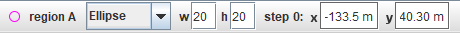
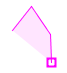
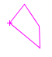
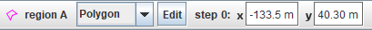

An RGB region track measures the mean brightness and rgb data (mean and standard deviation) as a function of time inside a user-defined region of a video image.
An RGB region may be an ellipse, rectangle or freeform polygon. Select the desired shape type from the dropdown on the toolbar.
Marking the region depends on the shape type:

 

If the position of the rgb region is unfixed so that it varies from frame to frame (see below), then the video will autostep forward so the region can be positioned independently on every frame. Even though the region is automatically drawn on every frame, you can still hold down the shift key and click the mouse to move it immediately to the clicked position.
By default, the rgb region has both a fixed position and a fixed shape--that is, its position and dimensions/vertices do not vary from frame to frame. Uncheck the appropriate checkbox in its track menu to allow these properties to vary.
When the position or shape is unfixed, then changing it in a given frame defines that frame as a keyframe and applies the change to all later frames up to the next keyframe. Frame 0 is always a keyframe. For example, if you made a change in frames 4 and 9 then frames 1-3 would be like frame 0, frames 5-8 would be like frame 4 and all later frames would be like frame 9.